Аудит безопасности
Лабораторная работа №6 — анализ и устранение уязвимостей
1. XSS (Cross-Site Scripting)
Данные, введённые пользователем или полученные из базы данных, могут содержать вредоносный JavaScript-код, который будет выполнен в браузере других пользователей. Необходимо экранировать все выводы.
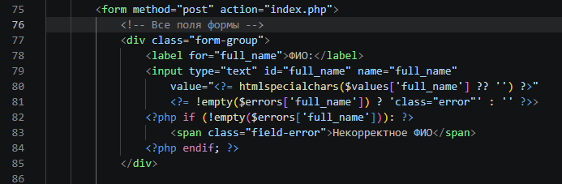
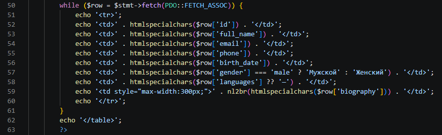
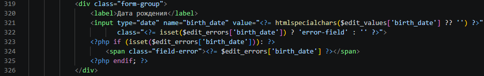
Все данные, выводимые в HTML, должны быть обработаны функцией htmlspecialchars() с соответствующими флагами. В приложении эта мера уже реализована, что подтверждается скриншотами.
2. Information Disclosure (Раскрытие информации)
При ошибках подключения к БД или выполнении запросов выводятся детали (логин, хост, тип ошибки), что даёт злоумышленнику информацию о структуре системы.
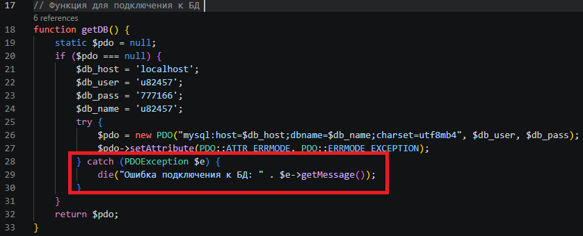
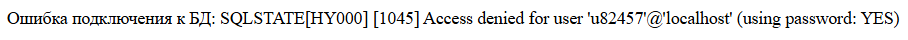
Заменяем вывод подробностей на общее сообщение, а оригинальную ошибку записываем в лог сервера.
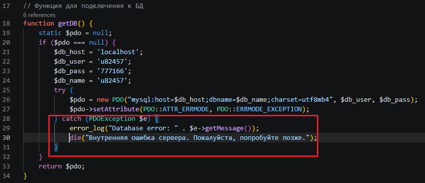

3. SQL Injection
Внедрение произвольного SQL-кода через неэкранированные пользовательские данные. Угроза отсутствует, так как везде используются подготовленные запросы.
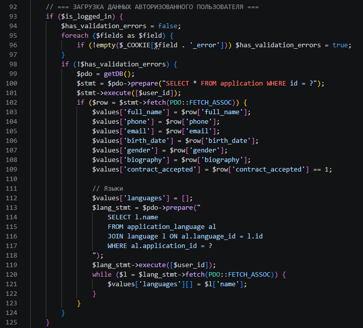
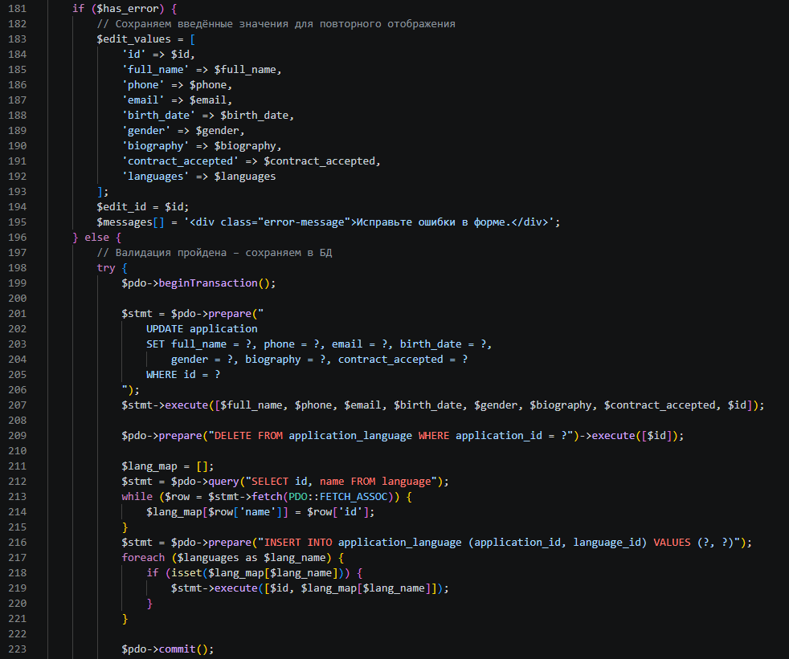
Все запросы к БД используют PPDO::prepare() и передачу параметров через execute(). Данная практика полностью исключает SQL-инъекции.
4. CSRF (Cross-Site Request Forgery)
Отсутствие защиты от подделки межсайтовых запросов – злоумышленник может заставить авторизованного пользователя отправить запрос (изменить данные, удалить анкету) без его ведома.
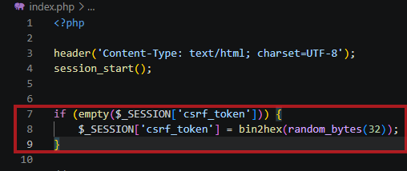
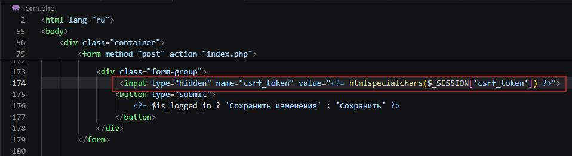
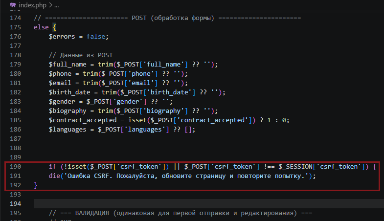
Введена генерация случайного токена на каждую сессию, его обязательная передача в скрытом поле формы и строгая проверка при получении POST-запроса. Если токен не совпадает – запрос отклоняется. Решение внедрено на всех страницах где есть форма (admin.php, login.php, form.php)
5. Include / Upload уязвимости
В приложении отсутствует динамическое включение файлов на основе пользовательских параметров и нет функционала загрузки файлов. Следовательно, уязвимости RFI/LFI и загрузки вредоносных файлов отсутствуют.
Все include используют только заранее определённые имена (например, include 'form.php';). В будущем, при добавлении загрузки файлов, необходимо проверять MIME-тип, расширение и переименовывать загружаемые файлы.
Заключение
В результате аудита были выявлены и исправлены следующие уязвимости:
- XSS – экранирование данных реализовано везде;
- Information Disclosure – скрыты детали ошибок БД;
- SQL Injection – угрозы нет, используются подготовленные запросы;
- CSRF – добавлена защита токенами;
- Include/Upload – уязвимости отсутствуют в текущей реализации.
Все меры задокументированы скриншотами, код исправлен, приложение соответствует требованиям безопасности.